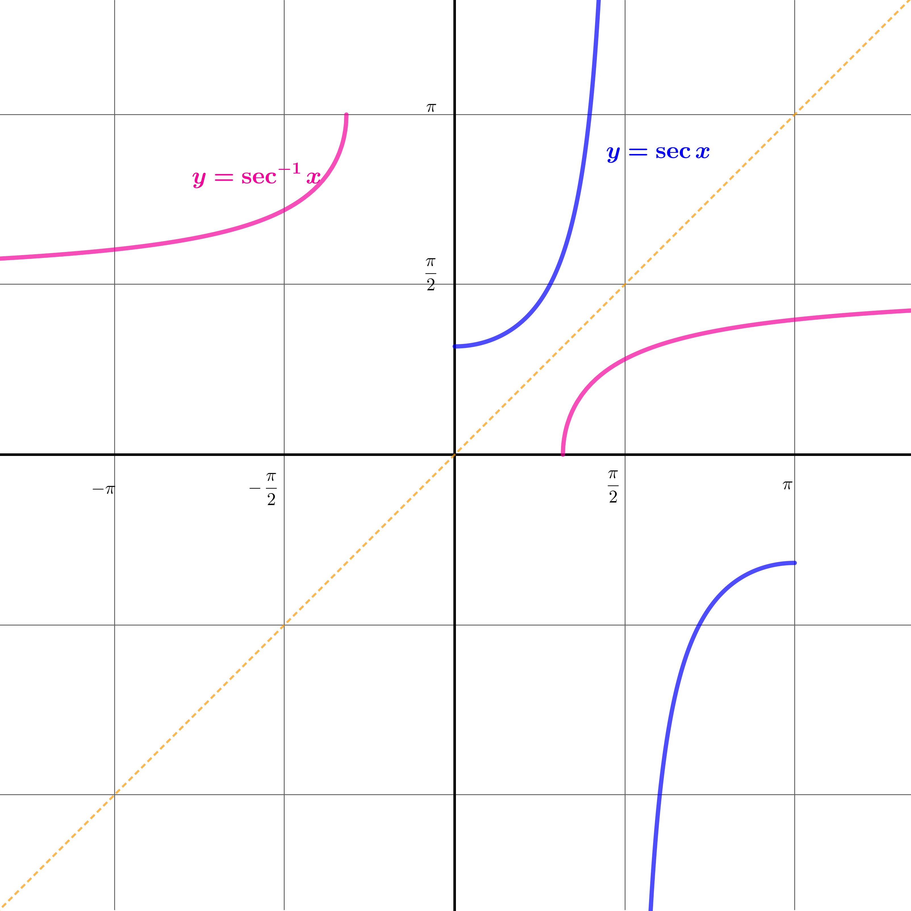
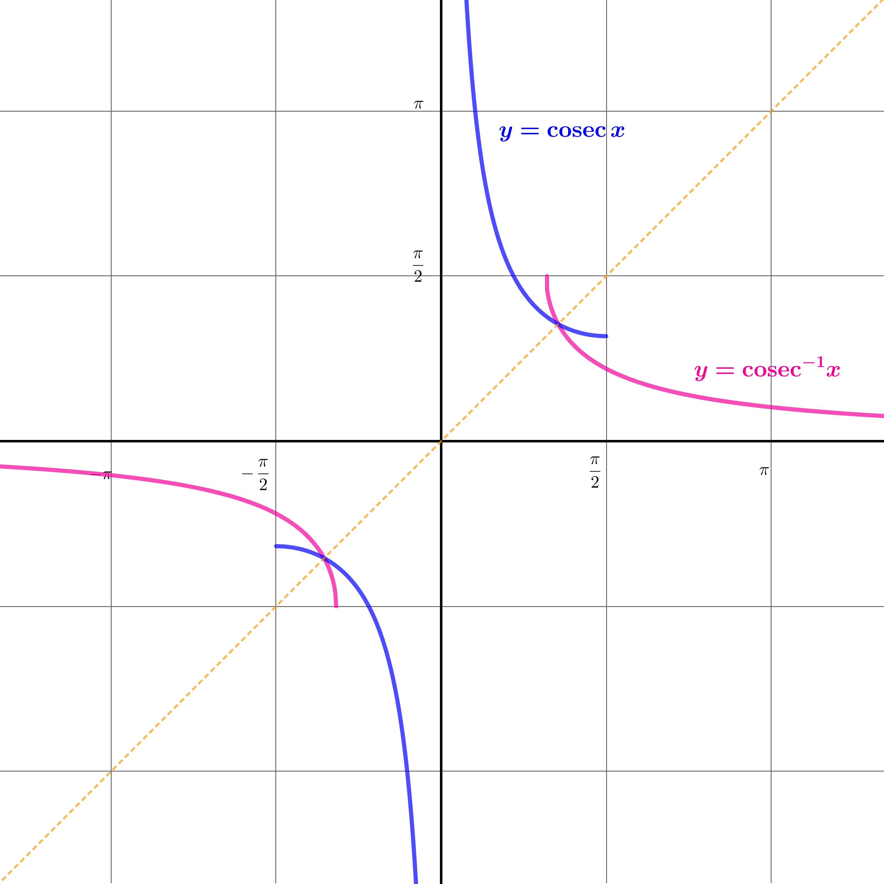
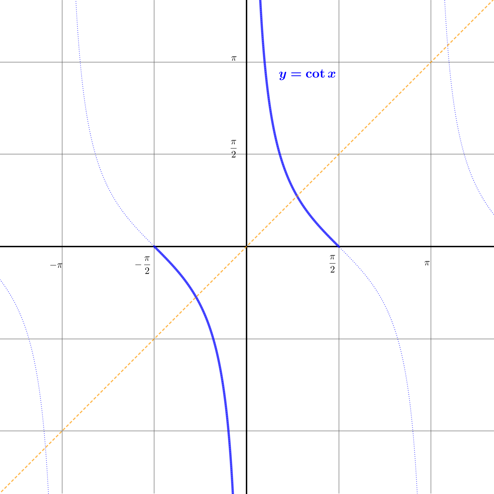
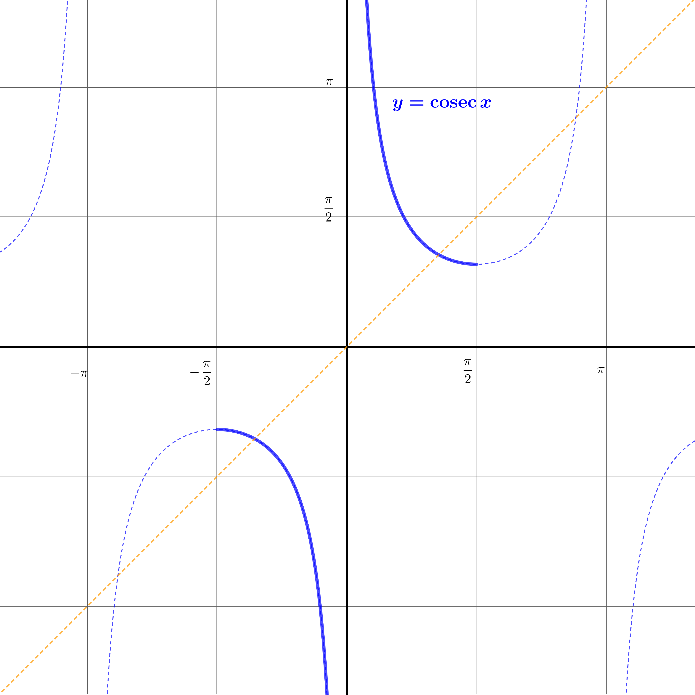
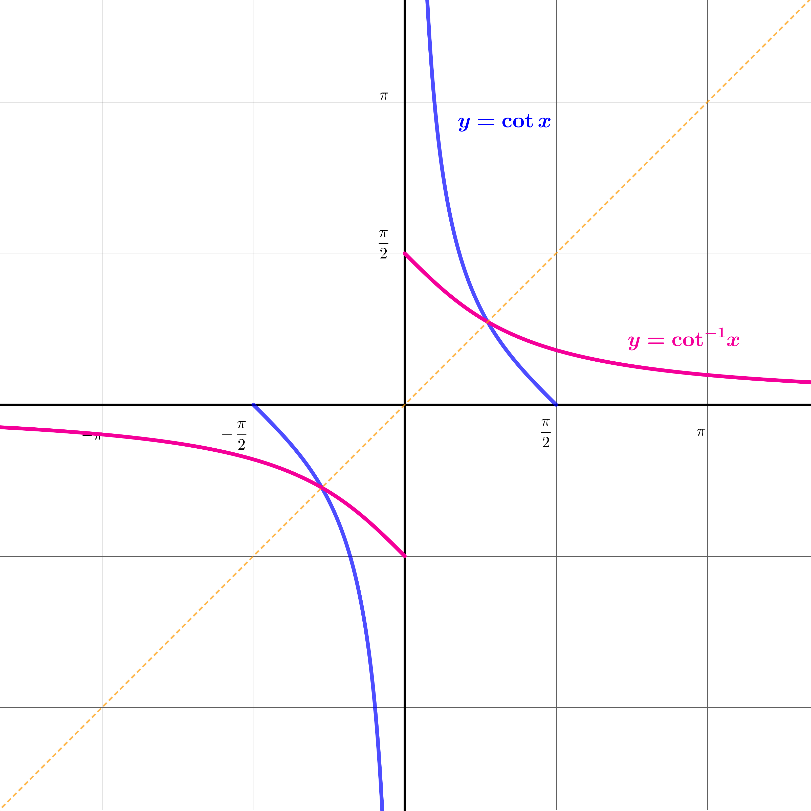

Welcome to Inverse Circular Functions: Part 2
This stage covers identities such as \(\arcsin x + \arccos x = \frac{\pi}{2}\), compositions of inverse circular functions, and sum formulas for arcsin, arccos, and arctan.
Keep the domain restrictions in mind when working with compositions and identities!
Dr Brian Brooks
Mathematics InSight
What are
\[\arcsin x + \arccos x\]
when
\[x=0,\;x=\pm\frac{1}{2},\;\pm\frac{\sqrt 2}{2},\;\pm\frac{\sqrt 3}{2},\;\pm 1\]
For example: \[\arcsin\frac{\sqrt{2}}{2} + \arccos\frac{\sqrt{2}}{2} = \frac{\pi}{4} + \frac{\pi}{4} = \frac{\pi}{2}\]
\[\arcsin0 + \arccos0 = 0 + \frac{\pi}{2} = \frac{\pi}{2}\]
\[\arcsin1 + \arccos1 = \frac{\pi}{2} + 0 = \frac{\pi}{2}\]
\[\arcsin( - 1) + \arccos( - 1) = - \frac{\pi}{2} + \pi = \frac{\pi}{2}\]
\[\arcsin\left(-\frac{\sqrt{2}}{2}\right) + \arccos\left(-\frac{\sqrt{2}}{2}\right) = -\frac{\pi}{4} + \frac{3\pi}{4} = \frac{\pi}{2}\]
\[\arcsin\frac{1}{2} + \arccos\frac{1}{2} = \frac{\pi}{6} + \frac{\pi}{3} = \frac{\pi}{2}\]
\[\arcsin\left(-\frac{\sqrt{3}}{2}\right) + \arccos\left(-\frac{\sqrt{3}}{2}\right) = -\frac{\pi}{3} + \frac{5\pi}{6} = \frac{\pi}{2}\]

\(\arcsin x + \arccos x = \theta + \varphi = \frac{\pi}{2}\) when \(x\) is positive.
When \(x\) is positive, we can easily see this from the right-angled triangle. The triangle doesn't really help so much for negative values of \(x\), but we can look at graphs for this.
On the same set of axes, draw the graphs \(y = \arcsin x\) and \(y = \arccos x\)
Here are the graphs \(y = \arcsin x\) and \(y = \arccos x\).

Where do they cross?
They cross at \(\left( \frac{\sqrt{2}}{2},\frac{\pi}{4} \right)\). The easiest way to see this is by looking at the symmetry of the diagram.
Alternatively, note that \[\sin y = \cos y \Rightarrow \tan y = 1 \Rightarrow y = \frac{\pi}{4}\].
What are the vertical distances of the pink and green points from the horizontal line of symmetry?

What are the vertical distances of the pink and green points from the horizontal line of symmetry?
The vertical distances are \[\arccos x-\frac{\pi}{4}\quad\text{and}\quad \frac{\pi}{4}-\arcsin x\]
Now use the symmetry of the diagram to find \[\arccos x+\arcsin x\]
Symmetry shows that these two distances are equal, which means
\[\begin{aligned} &\arccos x-\frac{\pi}{4}=\frac{\pi}{4}-\arcsin x\\[12pt] \Rightarrow &\arccos x+\arcsin x=\frac{\pi}{2} \end{aligned} \]
compositions of inverse circular functions
The right-angled triangle below shows the relationships when \(\theta = \arcsin x\), so \(\sin\theta = x\) and the hypotenuse is 1.

Use the triangle to find \(\cos(\arcsin x)\). State any necessary restriction on \(x\).
Find \(\cos(\arcsin x)\).
Since \(\arcsin x \in \bigl[-\tfrac{\pi}{2}, \tfrac{\pi}{2}\bigr]\), the cosine is non-negative, so we take the positive square root.
The right-angled triangle below illustrates the angle \(\phi = \arccos(\sin\theta)\) for \(\theta \in \bigl[-\tfrac{\pi}{2}, \tfrac{\pi}{2}\bigr]\).

Find \(\arccos(\sin\theta)\) in terms of \(\theta\).
Find \(\arccos(\sin\theta)\) for \(\theta \in \bigl[-\tfrac{\pi}{2},\tfrac{\pi}{2}\bigr]\).
Because \(\cos\bigl(\tfrac{\pi}{2}-\theta\bigr) = \sin\theta\), and \(\tfrac{\pi}{2}-\theta \in [0,\pi]\) for \(\theta \in \bigl[-\tfrac{\pi}{2},\tfrac{\pi}{2}\bigr]\), so the principal value condition is satisfied.
Use the right-angled triangle shown to find:

(a) \(\sin(\arccos x)\)
(b) \(\arcsin(\cos\phi)\) for \(\phi \in [0, \pi]\)
(a) \(\sin(\arccos x)\)
(b) \(\arcsin(\cos\phi)\) for \(\phi \in [0, \pi]\)
For (b): \(\sin\bigl(\tfrac{\pi}{2}-\phi\bigr)=\cos\phi\) and \(\tfrac{\pi}{2}-\phi\in\bigl[-\tfrac{\pi}{2},\tfrac{\pi}{2}\bigr]\) for \(\phi\in[0,\pi]\). ✓
Use the right-angled triangle shown to find \(\tan(\arcsin x)\) and \(\tan(\arccos x)\).

Find \(\tan(\arcsin x)\) and \(\tan(\arccos x)\).
Use the right-angled triangle shown to find \(\sin(\arctan x)\) and \(\cos(\arctan x)\).

Find \(\sin(\arctan x)\) and \(\cos(\arctan x)\).
Since \(\arctan x \in \bigl(-\tfrac{\pi}{2}, \tfrac{\pi}{2}\bigr)\), the cosine is always positive.
We can also differentiate the inverse circular functions more directly using the definition of a differential.
Using the fact that
\[\sin(A + B) = \sin A\cos B + \cos A\sin B\]and putting \(A = \arcsin a\) and \(B = \arcsin b\), find \(\sin\left(\arcsin a + \arcsin b\right)\) in terms of \(a\) and \(b\), without using \(\sin\) or \(\cos\) in your expression.
Hence find \(\arcsin a + \arcsin b\).
Find \(\sin\left(\arcsin a + \arcsin b\right)\) and hence \(\arcsin a + \arcsin b\).
although this isn't quite right if \(\arcsin a+\arcsin b\gt\frac{\pi}{2}\) or \(\le-\frac{\pi}{2}\)
In these cases, we have \[\begin{aligned} \arcsin a + \arcsin b&=\pm\pi- \arcsin\left(a\sqrt{1 - b^{2}} + b\sqrt{1 - a^{2}}\right) \end{aligned}\]
Find \(\cos\left(\arcsin a + \arcsin b\right)\) and hence \(\arccos a + \arccos b\).
Find \(\cos\left(\arcsin a + \arcsin b\right)\) and hence \(\arccos a + \arccos b\).
Putting \(c=\cos A\) and \(d=\cos B\), find \(\cos (A+B)\) and hence find \(\arccos c + \arccos d\).
Putting \(c=\cos A\) and \(d=\cos B\), find \(\cos (A+B)\) and hence find \(\arccos c + \arccos d\).
Putting \(u=\tan A\) and \(v=\tan B\), find \(\tan (A+B)\) and hence find \(\arctan u + \arctan v\).
Putting \(u=\tan A\) and \(v=\tan B\), find \(\tan (A+B)\) and hence find \(\arctan u + \arctan v\).
Well done on completing Part 2!
You have explored identities, compositions, and sum formulas for the inverse circular functions — including the beautiful result that \(\arcsin x + \arccos x = \frac{\pi}{2}\).
Part 3 continues with derivatives and integrals of the inverse circular functions.
Dr Brian Brooks
Mathematics InSight